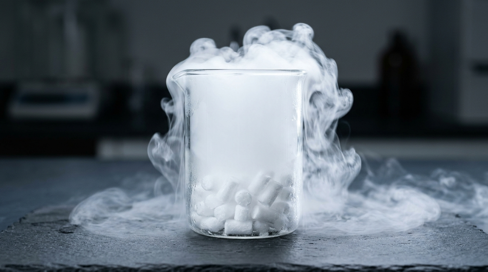
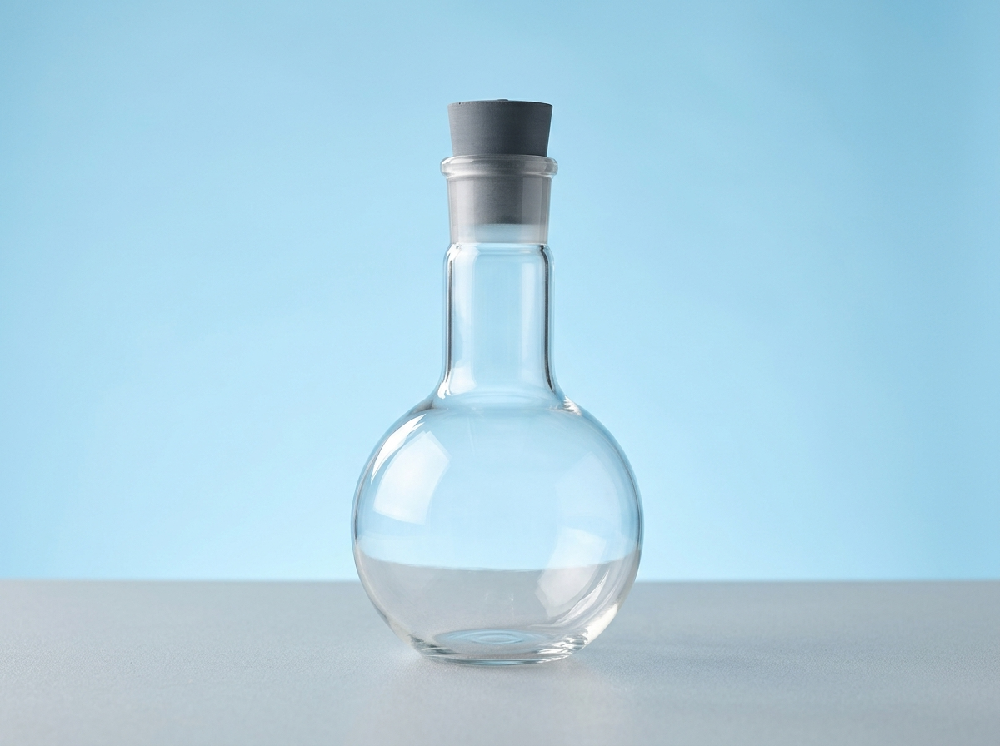
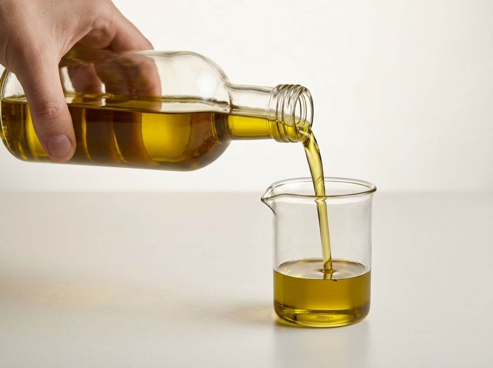
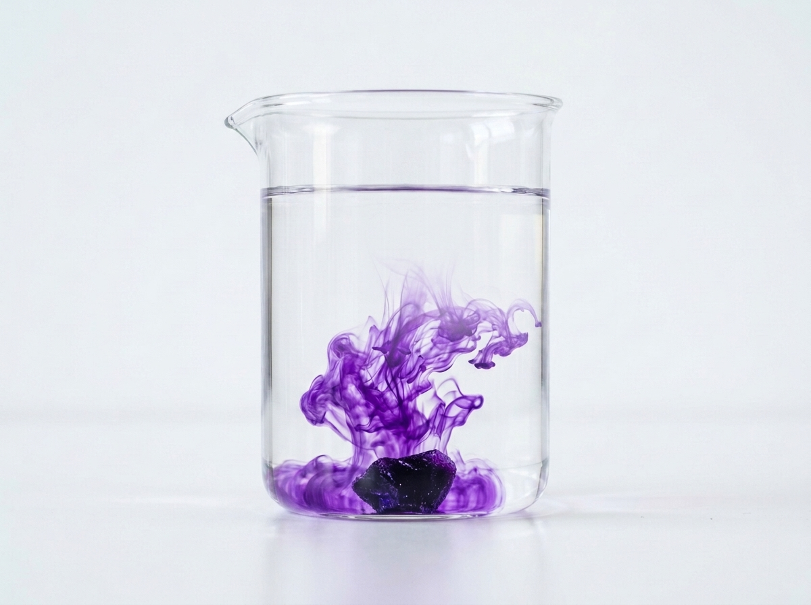
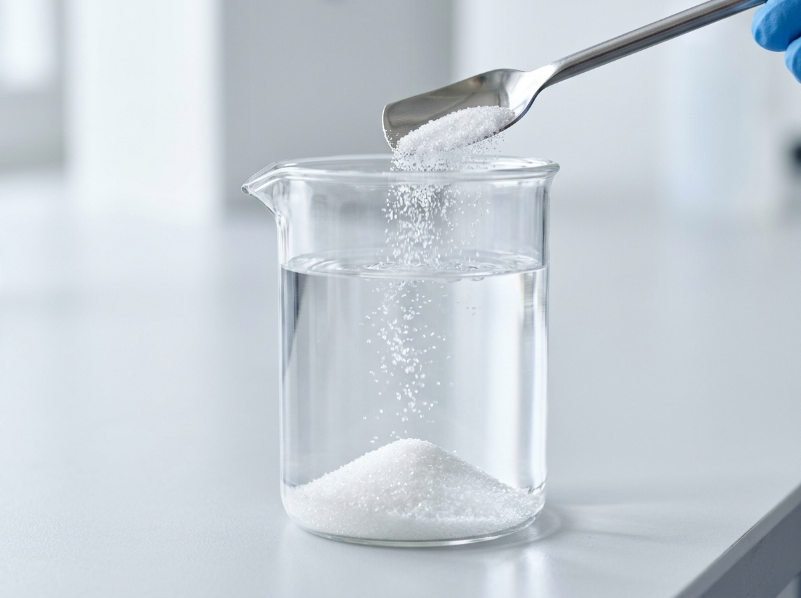

What you need to know (Edexcel IGCSE specification 1.1–1.4)
- 1.1understand the three states of matter in terms of the arrangement, movement and energy of the particles
- 1.2understand the interconversions between the three states of matter in terms of: the names of the interconversions; how they are achieved; the changes in arrangement, movement and energy of the particles
- 1.3understand how the results of experiments involving the dilution of coloured solutions and diffusion of gases can be explained
- 1.4know what is meant by the terms: solvent, solute, solution, saturated solution
States of matter & the particle model 1.1
Matter is anything that has mass (the amount of matter, in kg) and volume (the space it takes up, in m3 or L). It exists in three main states: solid, liquid and gas.
All matter is made of tiny particles that are constantly moving or vibrating. The three states differ in the arrangement, movement, and energy of their particles — and the strength of the forces of attraction between them.
| Property | Solid | Liquid | Gas |
|---|---|---|---|
| Arrangement | Fixed positions in a regular lattice, touching | Close together (touching), randomly arranged | Randomly arranged, far apart |
| Movement | Vibrate about fixed positions | Free to move past each other | Move freely in all directions |
| When heated | Vibrate more | Move faster | Move faster |
| Shape & volume | Fixed shape and fixed volume | Fixed volume; takes container's shape | No fixed shape or volume; fills container |
| Density & compressing | High density; cannot compress | Moderate density; not easily compressed | Low density; easily compressed |
| Forces of attraction | Strong | Weak | Very weak |
How to draw a liquid for full marks
Drawing liquid particles far apart! Liquids have almost the same density as solids — their particles are still touching (at least half must touch their neighbours), just arranged randomly instead of in neat rows.
Quick check
0 / 2 doneChanges of state & heating curves 1.2
Changes of state (interconversions) are reversible physical changes caused by changing temperature and/or pressure, which alters the kinetic energy of the particles.

Try heating and cooling particles
Melting & boiling (heat energy in)
- Melting: solid particles gain kinetic energy and vibrate more. At the melting point they overcome fixed positions and move past each other.
- Boiling: liquid particles move faster. At the boiling point they overcome all forces of attraction and spread far apart as a gas.
Evaporation vs boiling
- Evaporation: fastest particles escape from the surface only, at any temperature below the boiling point.
- Boiling: gas bubbles form throughout the whole liquid, only at the boiling point.
Predicting state from melting & boiling points
A pure substance melts at a fixed melting point and boils at a fixed boiling point. Compare the given temperature against those two numbers:
- Rule: Below melting point → solid. Between melting point and boiling point → liquid. Above boiling point → gas.
- Example: Substance X melts at −5 °C and boils at 30 °C. At room temperature (25 °C), 25 °C lies between −5 °C and 30 °C → liquid.
Now you try: bromine melts at −7 °C and boils at 59 °C. What state is it at −20 °C, 25 °C, and 80 °C?
At 25 °C (between −7 °C and 59 °C) → liquid.
At 80 °C (above 59 °C) → gas.
The stronger the forces of attraction between particles, the more energy is needed to separate them — and the higher the boiling point. At room temperature, air is a gas (boils at −195 °C), whereas olive oil is a liquid because its forces of attraction are stronger.


The heating curve
When you heat ice steadily, the temperature rises — except during melting (0 °C) and boiling (100 °C), where the graph goes completely flat.
Do NOT say "heat stopped going in"! During melting or boiling, heat energy is being used to overcome the forces of attraction between particles (changing state), rather than increasing their kinetic energy, so the temperature stays constant.
Quick check
0 / 2 doneDiffusion & dilution 1.3
Both diffusion and dilution provide direct experimental evidence that matter is made of tiny, constantly moving particles.
Diffusion is the net movement and spreading out of particles from an area of high concentration to an area of low concentration. It happens because of the random motion of particles colliding until they are evenly spread out.
Fast particles, slow diffusion
Gas particles travel at hundreds of m/s (hydrogen ≈ 1700 m/s), yet smells take seconds to cross a room because particles keep colliding with air molecules and changing direction.
Higher temperature → particles move faster → faster diffusion.
Experiment 1 — Bromine gas and air
Brown bromine gas sits in the lower jar and colourless air in the upper jar. When the glass divider is removed, both sets of particles move randomly and collide.
Even though bromine is denser than air, the brown colour spreads upwards until it is evenly distributed through both jars — proving gas particles move randomly in all directions.
Experiment 2 — Ammonia and hydrogen chloride
Cotton wool soaked in ammonia solution (NH3) is placed at one end of a glass tube and concentrated hydrochloric acid (HCl) at the other. Where the two gases meet, they react to form a white ring of solid ammonium chloride:
- Observation: The white ring of ammonium chloride forms closer to the HCl end.
- Explanation: Ammonia (NH3, Mr = 17) particles are lighter than hydrogen chloride (HCl, Mr = 36.5) particles, so NH3 particles move faster and diffuse further in the same time.
Now you try: what would happen to the time taken for the ring to form if the tube was warmer?
Experiment 3 — Dilution of potassium manganate(VII)
Dilution means adding more solvent (water) to a solution. A concentrated solution has lots of solute particles per unit volume; a dilute solution has fewer.

Even after diluting a single purple KMnO4 crystal many times, the solution is still faintly purple. This shows that the particles must be extremely small and there are enormous numbers of them in a single crystal.
Diffusion in liquids is actually very slow. Many fast-mixing liquid demos are mostly driven by convection currents rather than diffusion alone.
Quick check
0 / 2 doneSolutions & purity 1.4
Double Award students need to know and use the exact terms solute, solvent, solution, and saturated solution.
| Solute | The substance that dissolves (usually a solid, e.g. salt or sugar) |
|---|---|
| Solvent | The liquid that the solute dissolves in (usually water) |
| Solution | The clear mixture formed when a solute dissolves completely in a solvent |
| Soluble / insoluble | Can dissolve (e.g. salt, sugar) / cannot dissolve (e.g. sand, flour) |
| Saturated solution | A solution in which no more solute can dissolve at that temperature (at 20 °C, 1 L of water dissolves about 357 g of salt) |
Where do dissolved particles go?
Dissolved solute particles do not disappear or shrink — the number and size of particles stay the same, they simply spread out evenly among the water particles so you cannot see them. Insoluble solids (like flour) stay clumped together and sink.

NO! In chemistry, pure means made of only one substance (one type of element or compound). Even though sugar water looks crystal clear, it contains water particles and sugar particles — so it is a mixture that can be separated by physical processes.
Quick check
0 / 2 doneEnd-of-topic test
Test yourself without looking back! Answer the multiple-choice questions, write your own long answers, then open the mark schemes and tick off every mark you earned.
Diagram questions
Click an answer, then press ↻ Another example to generate a fresh question.